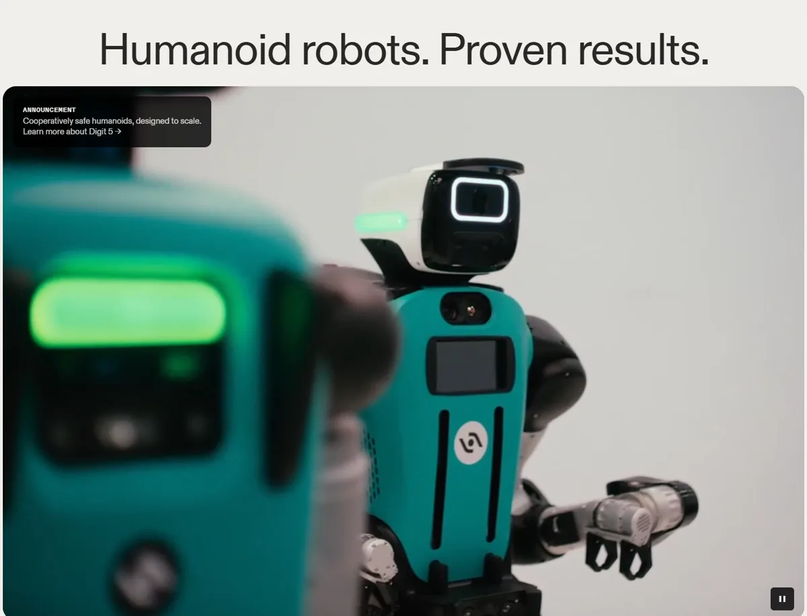
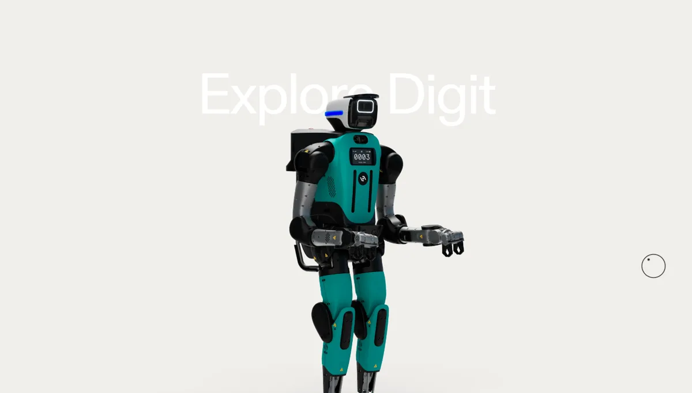
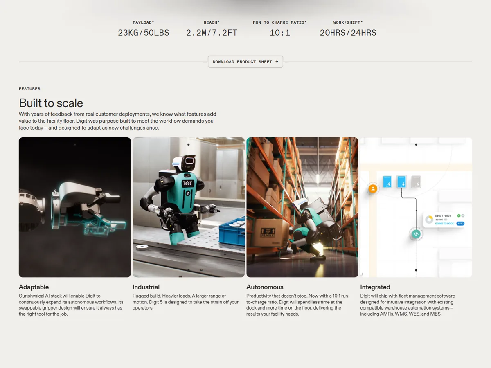

Agility RoboticsAgility Robotics, Inc.
第一家让人形机器人在真实仓库里按合同干活的公司：Digit 在 GXO 仓库搬了 10 万多个周转箱，首创人形机器人租赁（RaaS）；2025 年收入只有 180 万美元，正通过 SPAC 以 25 亿美元估值登陆纳斯达克。
一页结论
- “先证明价值、再扩点”的工业路线：2024-06 与 GXO 签下首个人形机器人 RaaS 合同，Digit 已在其佐治亚仓库搬运超过 10 万个周转箱；2026-10 GXO 扩到另外两个仓库S4
- 商业模式最透明：S-4 披露两种模式——租赁每台每月约 8,500 美元另收 2.5 万美元部署费；买断约 20 万美元加每年约 3.6 万美元软件与维护S6
- 收入与估值差距极大：2025 年收入 180 万美元，估值约为收入的 1,400 倍；2025 年烧掉约 1 亿美元现金S6
- Digit 5 是下一个关键：2026-09-15 发布，主打不需要隔离围栏的“协作安全”；2027 上半年交付早期客户，年底全面上市，算力统一采用 NVIDIA IGX ThorS2S5
- 上市募资缩水：原计划募资超 6.2 亿美元，赎回后预计约 4.65 亿美元（含 Foxconn 领投的 PIPE）S2S6
01公司介绍
| 项目 | 内容 |
|---|---|
| 公司 | Agility Robotics, Inc.，源自俄勒冈州立大学动态机器人实验室，创始人 Jonathan HurstS7 |
| 官网 | agilityrobotics.comS1 |
| 总部 | 美国俄勒冈州塞勒姆；匹兹堡（测试验证与技能开发）、加州弗里蒙特设有办公室S2S7 |
| 管理层 | CEO Peggy Johnson；CTO Pras VelagapudiS3S5 |
| 投资方 | NVIDIA、Amazon、软银愿景基金 2 期、舍弗勒、Foxconn、Abico、DCVC、Playground GlobalS2 |
| 资本动态 | 与 SPAC Churchill Capital Corp XI 合并，股东大会 2026-11-02，预计 11-04 交割、11-05 以 AGLT 在纳斯达克交易S2 |

02公司战略
Agility 把自己定位成“只说已经做到的事”的工业公司：先在单个客户现场证明价值，再扩展到更多站点。
- 聚焦重复、高强度的物料搬运：首批技能是搬箱、码垛与拆垛等工业劳动中最缺的环节S8
- 用安全认证建立门槛：官方称 Digit 是首个获得 FCC 认证并通过 OSHA 认可的 NRTL 现场安全检查的人形机器人；Digit 5 目标是首个实现协作安全的人形机器人S7
- 落地流程产品化：评估 → 在客户工作流中演示 → 长期合作维持产能，配合客户加速计划（CAP）S1S3
- 自建工厂：RoboFab 设计年产能最高 1 万台S3
03产品定位与产品线
| 项目 | 内容 |
|---|---|
| 定位 | “为工作而生”的多用途人形机器人，在不改造现有设施的前提下进入工厂与仓库S8 |
| 产品线 | Digit 1（科研版）→ 工业版 Digit → Digit 4（当前部署）→ Digit 5（2026-09 发布，2027 年交付）S7S4 |
| 软件 | Agility Arc 云端机队管理平台S1 |
| 目标客户 | 制造、汽车、物流、电商、农机、消费品、航空航天与国防S3 |
| 价格 | 租赁约 8,500 美元 / 月 + 2.5 万美元部署费；买断约 20 万美元 + 2 万美元部署费 + 每年约 3.6 万美元服务费（S-4 中的示意价）S6 |

04主要功能与技术路线
算力
统一采用 NVIDIA IGX Thor，NVIDIA 为 Digit 5 量产版独家算力供应商S5

05解决方案与场景
06商业模式
Agility 把租赁视为长期增长核心：按每月 8,500 美元计算，1,000 台在租机器人约带来每年 1.02 亿美元订阅收入，是 2025 年收入的约 57 倍S6。
07上下游供应链与渠道
08主要客户与落地
| 指标 | 数据 | 口径 |
|---|---|---|
| 客户现场 | 9 个 | S-4 披露S6 |
| GXO 搬运量 | 超 10 万个周转箱 | 佐治亚 Flowery Branch 仓库，2024-06 起S4 |
| 累计运行 | 6.5 万小时以上 | 官方口径S1 |
| 付费项目 | 新增 3 家制造客户（未具名） | 2026-10 官方新闻S3 |
| 潜在客户 | 30 多家 | 洽谈中或参加 CAPS3 |
| 订单承诺 | 单一客户超 3 亿美元多年期订单 | 取决于合同里程碑与产品规格，不是当期收入S2 |
舍弗勒 COO 在官网表示，计划到 2030 年在其全球 100 家工厂部署“相当数量”的人形机器人S8。
09营收与财务
10落地痛点
11近期动态
12潜在风险分析意见
| 风险 | 表现 | 可能程度 |
|---|---|---|
| 估值与收入脱节 | 估值约为 2025 年收入的 1,400 倍S6 | 高 |
| 上市后股价波动 | SPAC 赎回率高，募资从 6.2 亿降到约 4.65 亿美元S2S6 | 高 |
| Digit 5 交付延期 | 2027 年交付与认证存在不确定性（分析意见） | 中 |
| 价格竞争 | 中国人形机器人价格远低于 Digit 的约 20 万美元买断价（分析意见） | 中 |
| 单一算力供应商 | NVIDIA 独家供应 Digit 5 算力S5 | 低 |
“可能程度”为基于现有公开信息的判断，不是量化预测。
13综合结论分析意见
优势
- 最早的真实商业部署
- 安全认证经验
- 透明的商业模式与公开财务
劣势
- 收入规模极小
- 持续烧钱
- 负载与通用性不如新一代竞品
机会
- 上市后的资金与品牌
- GXO 等物流巨头的扩点
- 舍弗勒 100 家工厂
威胁
- Figure、Tesla 的资金规模
- 中国厂商的价格
对 AI 产品团队的启示
- “小场景、真合同”比大愿景更难也更值钱：一个仓库搬 10 万个箱子，比一百个演示视频更能说服客户扩点。
- 租赁模式降低客户决策门槛：把 20 万美元的资本开支变成每月 8,500 美元的运营开支，同时为厂商带来更高的生命周期收入。
- 安全是 B 端落地的入场券：认证、人体检测、无围栏协作，直接决定能否进入客户现场。
- 上市让财务透明：Agility 公开了行业第一份详细的人形机器人单位经济模型，可作为评估同类公司的基准。
信息缺口
以下信息未找到可靠的公开来源，本报告不做推测。
- Digit 单台制造成本与毛利
- RoboFab 实际产量
- 3 亿美元订单的客户身份
- 零部件供应商名单
- 上市交割结果（截至 2026-11-02 尚未完成）
来源
A 官方 · B 权威媒体或第三方 · C 社区（仅用于口碑与线索）。访问日期均为 2026-11-02。
- S1 · ADigit 5 产品页与官网首页Agility Robotics · 2026-11-02 访问
- S2 · AAgility Robotics and Churchill Capital Corp XI Announce Expected Gross Capital Raise of Approximately $465 MillionAgility Robotics · 2026-10-30
- S3 · AAgility Robotics Highlights Commercial Momentum and Growing Enterprise Demand for DigitAgility Robotics · 2026-10-26
- S4 · AGXO and Agility Robotics Expand PartnershipGXO / Agility Robotics · 2026-10-26
- S5 · AAgility Robotics Expands NVIDIA Collaboration as It Prepares Digit 5 for Commercial ScaleAgility Robotics · 2026-10-22
- S6 · BAgility Robotics reports $1.8M revenue ahead of humanoid SPAC（S-4 解读）The Robot Report · 2026-09
- S7 · A公司概况（历史、RoboFab、办公地）Agility Robotics · 2026-11-02 访问
- S8 · A解决方案页（技能与客户评价）Agility Robotics · 2026-11-02 访问
- S9 · BAgility Robotics / Churchill Capital Corp XI 合并进展Yahoo Finance · 2026-10-30
- S10 · CAgility Robotics Stock: $2.5B SPACTSG Invest · 2026